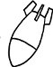

Amerika'nın Kanada sınırına yakın bir bölgede, beş ayrı üniversite kurumunu birbirine bağlayacak biçimde kurulan bir Kadın Çalışmaları Merkezi'ndeyim tam tamına üç gün, üç gecedir. İçinde sincapların cirit attığı göz alabildiğine yeşil bir kampüsün kenarında köşesinde bir yerlerindeyim. Önüm arkam sağım solum koşuya çıkmış, yürüyüşten dönen, elinde kitap çimenlere serilmiş, bir binadan ötekine seyreden kadınlarla dolu. Sanki şimdi kimsenin hatırlamadığı bir tarihte, ayırımcı-ayıklamacı bir atom bombası patlamış yakınlarda bir yerlerde. Atom bombası sadece erkekleri öldürmüş; geriye kadınlar kalmış ve bir de sincaplar. Ve şimdi onlar her yerdeler. Başka başka ırklardan, dinlerden, kültürlerden, geçmişlerden gelen kadınlar mıknatısla çekilmişçesine burada toplanmışlar. Yüzlerindeki ifadeye bakılırsa hemen hepsi memnun burada olmaktan. Bilmediğim türden bir rahatlık, görmediğim türden bir nezaket içindeler her daim. Tanıdık tanımadık herkes birbirine selam ve yol ve destek veriyor. Ortak bir amaç için bir araya gelmişiz sanki biz yüzlerce, binlerce kadın. Ama sonra görünmez bir el işe karışıp benim hafızamdan silivermiş o ortak amacın ne olduğuna dair bilgiyi. Ben feleğim şaşmış, pusulam kaymış vaziyette dolaşıyorum aralarında. Bunca nezakete, onca inceliğe nasıl cevap vereceğimi bilemeden. Bazen hepsi birden aralarında anlaşmışlar, benimle dalga geçiyorlarmış gibi bir hisse kapılıyorum. Şaka yapıp yapmadıklarını anlamak için uzun uzun bakmam gerekiyor gözlerinin içine.
"Teşekkür ederim" diyorum, kütüphanenin yerini bana tarif eden kulağında walkman, saçları diken diken, sabahın köründe jogging yapan kadına. "Ben teşekkür ederim" diyor gördüğüm en yayvan tebessümle. "Size yardım edebildiysem ne mutlu bana. Mutlu oldum ben de!"
Gözlerimi kırpıştırarak şaşkın şaşkın bakıyorum yüzüne. Yok olamaz, benimle dalga geçiyor. Sadece o değil, hepsi dalga geçiyor olmalılar benimle. Şu çimenlerin arasına, çalıların arkasına, sincapların yanına saklanmışlar. Binlerce göz binlerce kulak kesilmişler, beni kafalıyorlar akıllarınca. Yer miyim hiç, yemem? Yani yememeliyim.
Kadından ağır ağır sıyırabildiğim bakışlarımı şüpheli şüpheli etrafta dolaştırıyorum. Nafile. Çimenler temiz, çalıların arkası boş, sincapların yanında da kimsecikler yok. Walkman'li koşucu dikkatle inceliyor yüzümü: "Yardım edebileceğim başka bir konu var mı acaba?" Kafamı sallıyorum. O zaman, bir öncekinden daha da yayvan bir gülümsemeyle iyi günler diliyor bana ve hemen ardından ekliyor: "Dilerim güzel bir gün geçirirsin! Benimkinden daha güzel olsun günün!"
Mümkünü yok yapamıycam. Ben burada bu insanların arasında kafayı çıtır çıtır yiyebilirim belli ki. Bir kere ben alışmışım insanları yara yara yürümeye, yürürken omuz dirsek yemeye, karşıdan karşıya geçerken araba sürücülerinden aman dilemeye. Ben alışmışım "Hayatta Kalmanın İnce Uzun Yolları" adlı yaşam kılavuzunu madde madde hatmetmeye. İstanbulluların birbirlerine zorluk çıkarmasına, cins-i latifin cins-i latifin kuyusunu kazmasına, eli kalem tutan insanların kalemleri için harcadıklarından daha fazla enerjiyi birbirlerinin ardından en çirkin dedikoduları yapmaya harcamalarına, komşunun komşuya kazık atmasına, yazarın yazara köstek olmasına, kimsenin kimseyi can-ı gönülden sevememesine, kimsenin kimsenin iyiliğini aslında pek de istememesine... ben alışmışım çekişmelere, didişmelere, aşağılamalara, çelme takmalara... alışmışım insanın insana ettiklerine...
Yok yapamıycam. Bunca iyilik, bu kadar tebessüm, böylesine incelik kaypak bir sabun kalıbı gibi kayıp gidiyor ellerimin arasından. Mümkün değil tutamıyorum; herhangi bir yerinden kavrayamıyorum. Şaşkınlığımı hisseden ama tam da anlayamayanlar, "jet lag" diye açıklıyorlar durumu. Uyku düzenim rayına oturunca kendime geleceğimi söyleyip hemen ardından bol bol gülümsüyorlar. İtiraz edecek durumda değilim; mecburen ben de gülümsüyorum onlara. Geldiğimden beri hayatımda hiç gülümsemediğim kadar gülümsüyorum. Acı acı.
Bu sabah kadınların koşu yaptığı yoldan uzaklaşıp sincapların tırmandığı ağaçların yanında oturdum. En çok ağaçlara yakın hissediyorum kendimi. Ağaçlar sahici. Ağaçlar tanıdık. Onlara dokunabiliyorum, istediğim gibi sıkı sıkı kavrayabiliyorum. Emin olabiliyorum gerçek olduklarından ve bu dünyada yaşadıklarından. "Kütüğün teki" deriz ya kaba saba insanlara, belki de bu laf yüzünden geliyorum ağaçların yanına. Belki de içten içe, memleketimde görmeye alıştığım kabalıkların-hoyratlıkların eksikliğini, bu ağaçların dallarına, gövdelerine, köklerine dokunarak telafi edebileceğimi zannediyorum. Korkarım ben şimdiden memleket hasreti çekiyorum.
Boston